Esta pagina muestras los pasos y detalles a seguir para realizar la simulación del fuego.
En este trabajo se realiza la simulación del fuego, para ello se utiliza un sistema de partículas, en donde se puede ir agregando y eliminando partículas. El sistema de partículas se utiliza por la necesidad de actualizar los datos, por ejemplo, cuando se emite el fuego, una partícula comienza con una determinada posición, y luego va a ir cambiando, así como también se le asocia un tiempo de vida, etc. y es por ello que necesitamos saber el cambio que tiene cada partícula en sus frame anterior, para poder generar su frame siguiente, es por ello que utilizamos una función de opengl, que nos devulve dicha información
Como se mensiono, también se utilizan algunos conceptos de como se da el proceso de generacion del fuego, con la finalidad de intentar dar un efecto más realista.
Los principales conceptos que se debe tener es que el fuego esta compuesta por miles de partículas, en el caso del fuego una particula de fuego se genera como combustible, hasta el momento de su fin de vida.
En cada partícula del fuego se debe de considerar:
Dependiendo la técnica usada puede variar los atributos de la partícula, o pueden ser realcionados para obtener un nuevo atributo, como es el tiempo de vida.
Ahora se debe de entender un poco el tiempo de vida del fuego. Todo esto comienza con la emisión de combustible, el cual se va a calentar y se va a convertir en el blue core, pasado el tiempo aumenta la temperatura hasta obtener un color rojo-amarillo, luego la temperatura va a llegar a tu tope, y finalmente empieza a enfriarse, hasta obtener un color oscuro.
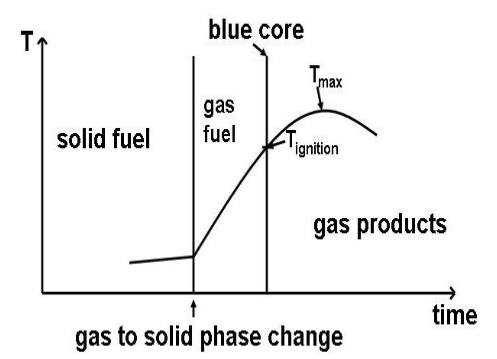
Para este proceso se debe de considerar la ecuacioón de Navier-Stokes, el cual modela fluidos.
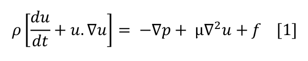
También de manera muy importante se utilizó la combinación de los colores, donde comienza con un color rojiso, y al aumentar particulas, se van juntando las particulas, y con un poco de color en verde, en cantidad se aprecia un color amarillo; de la misma forma de da una cantidad menor de azul, de esta forma, donde hay gran concentracion de particulas se visualiza un color blanco, para un mejor entendimiento mieremos la figura siguiente:
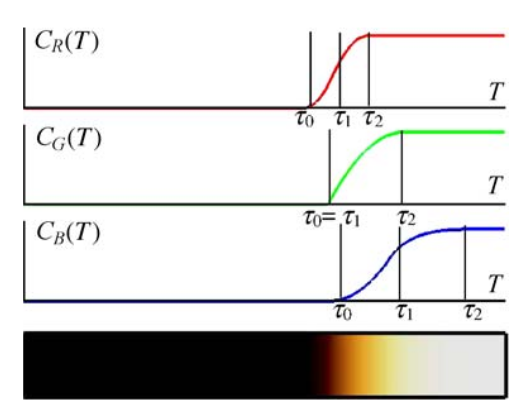
Además del vertex shader y el fragmet shader se utilizó un shader adicional, el cual es geometry shader.
La principal utilidad que se le dió al geometry shader fue la capacidad de poder emitir más partículas si fueran necesarias, o por el caso contrario, no emitir partículas, pues se consideraría como si acabo el tiempo de vida de la partícula.
Ahora bien, si bien es cierto una partícula cambia en el transcurso del tiempo, es necesario saber cuales fueron las caracteristicas del frame anterior para calcular las nuevas caracteristicas del frame actual, es por ello que se utliza la funcion de "feedback", con la cual podemos retornar todos los cambios echos en un tiempo determinado, y asi actualizarlo para su siguiente iteración. Es por ello que ahora el pipeline es el siguiente:
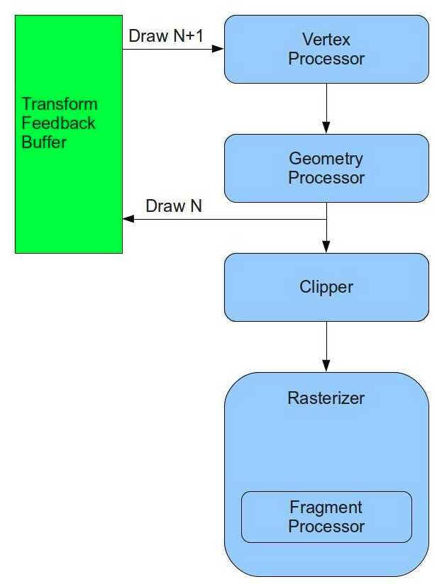
La idea principal del geometry shader es que a partir de una simple primitiva se creen otras primitivas con caractirísticas diferentes. Cuando un geometry shader esta en uso las salidas del vertex shader son las entradas del geometry shader como se ve en las siguientes imágenes:
El siguiente codigo pertenece al vertex shader:
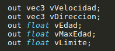
El siguiente codigo pertenece al geometry shader:
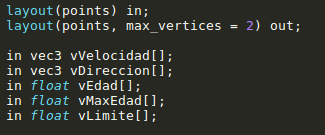
Se puede apreciar que la salida del vertex shader es la entrada del geometry shader, ademas se ve el parametro out, el cual tiene max_vertices, que indica cuantos veritces puede generar este shader.
En el geometry shader, luego de realizar Las operaciones necesarias con los parametros de entrada, es necesario retornarlas, para ello en el shader se debe indicar cuales seran las varibles de salida del shader al feedback.
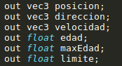
Y luego de hacer las operaciones se debe emitir el vertice y luego la primiriva.
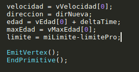
Ahora en el programa general se debe de indicar las variables a que serán devueltas en el geometry shader, las cuales deben coincidir
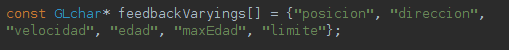
Y por supuesto indicar cuantas variables y se van a retornar con la función:
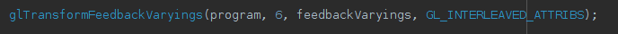
El código anterior se debe de colocar justo antes de linkear el programa
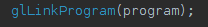
Primero se visualiza una simple actualización de las posiciones de las partículas, con lo cual el fuego tiene un efecto muy rigido.
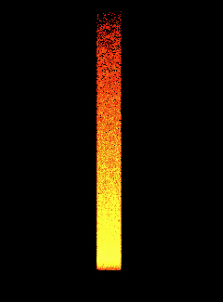 Fuego 1(Video)
Como segundo paso se utiliza la dirección en cada partícula, creada de forma aleatoria, con dirección hacia arriba, ya que no se cuenta con la influencia de la gravedad, además se utiliza el tiempo de vida de la partícula.
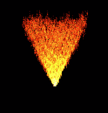 Fuego 2(Video)
Luego se utiliza el tiempo de vida máximo de una partícula, pero creada de forma aleatoria, con algunos parametros que hacen que sean controlados.
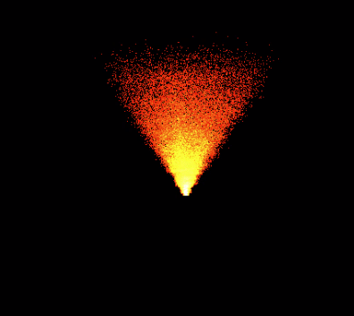 Fuego 3(Video)
Luego se aplica un ruido para darle un movimiento al fuego, al igual que lo anterior, con un margen manejable.
En el ultimo paso se intentó restringir un poco el echo de que el fuego no siempre se expade, si no que luego se concentra, el cual dicho efecto no se logro en su totalidad.
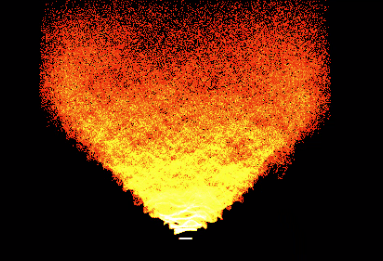 Fuego 5(Video)